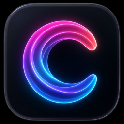

Cast
Light up your HyperX QuadCast 2 S from the macOS menubar.
Download Cast 1.0.1What you get
- Fifteen lighting effects Sorted across Colors, Patterns, Scenes, and Audio. Click a tile to switch.
- Time-of-day color Any single-color effect can drift with the actual time. Warm at sunrise, neutral at midday, amber at dusk. I leave this on most days.
- Four audio-reactive modes EQ, Prism, VU Meter, and Spectrum Waterfall. They read your mic input in real time.
- Stays out of the way Menubar only, no Dock icon. Picks up the mic the moment you plug it in.
Privacy
No analytics. No telemetry. Audio for the reactive modes runs through an FFT in memory. Nothing is recorded, nothing leaves the machine.